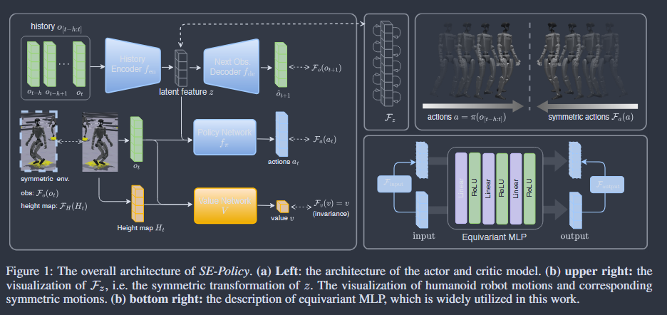

Symmetry Equivariant Reinforcement Learning Policy - temporally and spatially coordinated motions with higher task perfo
Symmetry Equivariant Reinforcement Learning Policy - temporally and spatially coordinated motions with higher task performance, DRL-based

